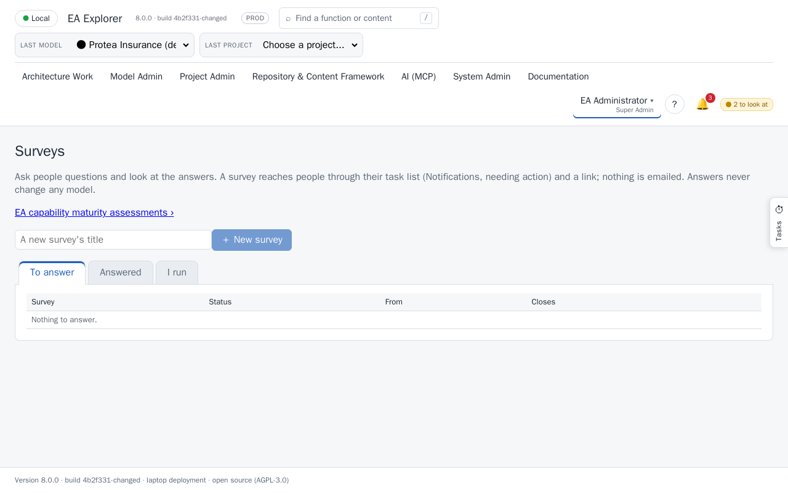

Read a survey's results
For: Project Admin
The answers, counts and charts.

#/surveysWhy do this
Results turn answers into something you can act on: each question's answers, counts and charts, the people who have not yet replied, and a download to Excel for your own analysis. They feed maturity assessments, stakeholder work and models, but never change a model by themselves.
Some of the most useful architecture knowledge is in people's heads. Surveys and maturity assessments gather it in a form that can be compared over time.
In TOGAF terms: The Preliminary phase and the architecture capability: gathering what people know and judging the maturity of the practice. See EA Explorer and the TOGAF Standard.
The goal: You see what people answered.
Steps
- Open the survey; Results.
- Read each question's answers and charts.
- Download them to Excel.